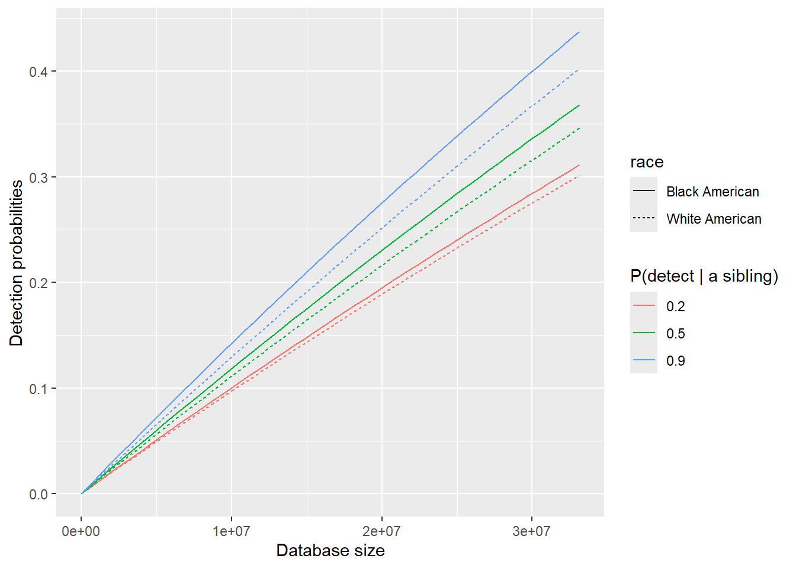
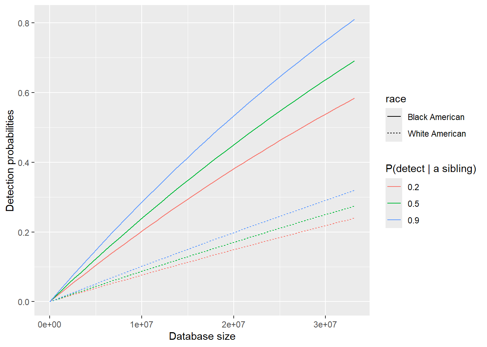

Disparities in Short-Range Familial Searches
Junhui He
2025-02-22
Last updated: 2025-02-22
Checks: 7 0
Knit directory: PODFRIDGE/
This reproducible R Markdown analysis was created with workflowr (version 1.7.1). The Checks tab describes the reproducibility checks that were applied when the results were created. The Past versions tab lists the development history.
Great! Since the R Markdown file has been committed to the Git repository, you know the exact version of the code that produced these results.
Great job! The global environment was empty. Objects defined in the global environment can affect the analysis in your R Markdown file in unknown ways. For reproduciblity it’s best to always run the code in an empty environment.
The command set.seed(20230302) was run prior to running
the code in the R Markdown file. Setting a seed ensures that any results
that rely on randomness, e.g. subsampling or permutations, are
reproducible.
Great job! Recording the operating system, R version, and package versions is critical for reproducibility.
Nice! There were no cached chunks for this analysis, so you can be confident that you successfully produced the results during this run.
Great job! Using relative paths to the files within your workflowr project makes it easier to run your code on other machines.
Great! You are using Git for version control. Tracking code development and connecting the code version to the results is critical for reproducibility.
The results in this page were generated with repository version a67a613. See the Past versions tab to see a history of the changes made to the R Markdown and HTML files.
Note that you need to be careful to ensure that all relevant files for
the analysis have been committed to Git prior to generating the results
(you can use wflow_publish or
wflow_git_commit). workflowr only checks the R Markdown
file, but you know if there are other scripts or data files that it
depends on. Below is the status of the Git repository when the results
were generated:
Ignored files:
Ignored: .Rproj.user/
Unstaged changes:
Modified: PODFRIDGE.Rproj
Note that any generated files, e.g. HTML, png, CSS, etc., are not included in this status report because it is ok for generated content to have uncommitted changes.
These are the previous versions of the repository in which changes were
made to the R Markdown (analysis/short-range-disparity.Rmd)
and HTML (docs/short-range-disparity.html) files. If you’ve
configured a remote Git repository (see ?wflow_git_remote),
click on the hyperlinks in the table below to view the files as they
were in that past version.
| File | Version | Author | Date | Message |
|---|---|---|---|---|
| Rmd | a67a613 | Junhui He | 2025-02-22 | update short-range-disparity |
| html | bd3ef15 | He Junhui | 2025-02-17 | Build site. |
| Rmd | a233b4f | He Junhui | 2025-02-17 | create short-range disparity report |
1 Objective
We aims to examines disparities in the probability of detecting an individual through short-range familial searches using forensic DNA databases for Black and White Americans. This analysis integrates forensic database sizes, forensic database representation (from Result 1), family size distributions (from Result 2), and considers different levels of true positive rates in determining a familial relationship of a particular kind.
2 Model assumptions
The population size is \(N\), and the racial proportion of the population is \(\alpha\).
The database has \(K\) individuals, and the racial proportion of the database is \(\beta\). For a given race, the database is randomly sampled from the current population. Both the population proportion \(\alpha\) and the database proportion \(\beta\) are considered fixed constants.
The family trees of different races are strictly separated. For instance, the parents and siblings of black Americans are black Americans, while the parents and siblings of white Americans are white Americans.
The number of siblings is \(r\), which is assumed to follow a multinomial distribution. In this model, the distribution of \(r\) is estimated based on the number of children born to women aged 40-49 in 1990 minus one.
In the short-range familial search, we only consider the individual self, the parents and full siblings for detection.
All related individuals are alive in the population.
The definition of detection: If we have one correct match, we declare that there is sufficient information to detect the target, regardless of whether or not we have any incorrect match.
3 Derivation
The derivation of the detection probability is based on Population Estimation of Genetic Surveillance Equation.
3.1 The probability of any individual present in a database
According to Assumptions 1 and 2, for the given race, there are \(\alpha N\) individuals in the population and \(\beta K\) individuals in the database. Because of the randomly sampling, the probability of any individual present in a database is \(P(\text{present})=\frac{\beta K}{\alpha N}.\)
3.2 The probability of a certain number of individuals among a group present in a database
Assume the group consists of \(n\) individuals. We establish a binomial model for the number of individuals \(k\) among this group present in a database, i.e., \(k\sim \text{Bin}(n, P(\text{present}))\). Thus, the probability of a certain number of individuals among a group present in a database is \(\text{Bin}(k;n,P(\text{present})).\)
3.3 The probability of at least one individual among a group detected in a database
Suppose the detection probability given a kind of relationship is \(P(\text{detect}|\text{a relationship})\). Based on the Bayes formula, the probability of at least one individual among a group detected in a database is given as \[P(\text{detect at least one individual among a group in a database})\\=\sum_{k=1}^n P(\text{detect at least one individual | k individuals present})P(\text{k individuals present})\\=\sum_{k=1}^n \text{Bin}(k;n,P(\text{present}))\{1-(1-P(\text{detect}|\text{a relationship}))^k\}.\]
3.4 The probability of detecting an individual in a database through short-range familial search
The probability of an individual being detected in the database is comprised of three separate probabilities: (1) the probability of the individual self being in the database, (2) the probability of being detected due to one or both parents being in the database, and (3) the probability of being detected due to one or more siblings being present in the database.
Assume that the individual self and the parents can be detected in a full probability, i.e., \(P(\text{detect}|\text{individual self, or parents})=1\). Therefore, the detection probability due to the individual self or one or both parents being in the database is given by \(1-\text{Bin}(0;3,P(\text{present})).\) According to Section 3.3, assuming \(r\) siblings, the detection probability due to one or more siblings being present in the database is given by \(\sum_{k=1}^r \text{Bin}(k;r,P(\text{present}))\{1-(1-P(\text{detect}|\text{a sibling}))^k\}.\)
Consequently, the probability of detecting an individual in a database through short-range familial search is \[P(\text{detect})=1-\left(1-\frac{\beta K}{\alpha N}\right)^3 \\ + \sum_{n=1}^{r_\max} \left[P(r=n)\sum_{k=1}^n {n \choose k} (\frac{\beta K}{\alpha N})^k(1-\frac{\beta K}{\alpha N})^{n-k} \{1-(1-P(\text{detect}|\text{a sibling}))^k\}\right].\]
4 Hypothesis testing in determining a familial relationship with forensic STR loci
The short-range familial search utilizes a hypothesis testing to determine a familial relationship of a particular kind. Especially, for a pair of individuals, \[H_0:\text{unrelated pairs}\leftrightarrow H_1: \text{detecting a certain familial relationship}.\] Therefore, the detection probability given a relationship is the so-called true positive rate, \(P(\text{accept } H_1|H_1\text{ is true})\).
In literature, the short-range familial search conducts a likelihood ratio test. The true positive rate will depend on the number of STR loci, population allele frequency differences and cutoff thresholds. See Result 4 for further discussions.
Remark: Assumption 7 implies that the false positive rate, \(P(\text{accept }H_1 | H_0 \text{ is true})\), does not influence the probability of detecting an individual.
5 Experimental results
We focus on short-range familial search in the United States, using the U.S. Census population as the total population size, given as \(N=331,449,281\). The racial composition is \[\alpha_{black}=12.05\%,~\alpha_{white}=57.84\%,~\alpha_{other}=30.11\%,\] where \(\alpha_i\) indicates the proportion of race \(i\) in the population.
Our analysis examines how family size distributions, database representation and the probability of detecting a sibling influence the probability of detecting an individual in a database. We consider two scenarios for database representation:
Ideal case: All racial groups are proportionally represented in the database, meaning \(\beta_{black}=\alpha_{black}\) and \(\beta_{white}=\alpha_{white}\).
Real case: In the real forensic database, Black Americans are overrepresented, while White Americans are underrepresented. The exact values of \(\beta\) depend on the specific database available. For this analysis, we take the values based on the prediction of racial proportions of each state in the CODIS forensic database.
Especially, we consider \(25\%,~50\%,~75\%\) quantiles of the absolute difference of racial proportions between forensic database and Census database, corresponding to the database representation \(\beta^1_{black}=20.42\%,~\beta^1_{white}=56.50\%, \quad \beta^2_{black}=24.50\%,~\beta^2_{white}=49.76\%\) and \(\beta^3_{black}=28.97\%,~\beta^3_{white}=39.26\%\).
In our analysis, the maximum database size is set to \(K=0.1*N=33,144,928\). Thus, the range of database size is \([0,0.1*N].\) Moreover, for the detection probability of a sibling, we consider three settings where \(P(\text{detect}|\text{a sibling})=20\%,~50\%,~\text{and}~90\%.\)
5.1 Distribution of number of siblings

Since the proportion of individuals with more than \(11\) siblings is extremely small (i.e., nearly zero), we believe that a simple multinomial distribution is appropriate for modeling the number of siblings.
5.2 Detection probabilities without considering representation disparities
In this subsection, we assume that the population and database have the same representation. The database proportions \(\beta\) are set equal to the population proportions \(\alpha\) in the calculation of detection probabilities. These results are utilized to explore the solely influence of disparities in the family sizes.
The probabilities of detecting an individual given a certain level of true positive rates from a forensic database without representation disparities through short-range familial search.

| Version | Author | Date |
|---|---|---|
| bd3ef15 | He Junhui | 2025-02-17 |
5.3 Detection probabilities considering representation disparities
In this subsection, we assume that representation disparities exist between the Census population and the forensic database. Specifically, Black Americans are overrepresented, while White Americans are underrepresented in the database. We calculate the probabilities of detecting an individual by treating \(\alpha\) and \(\beta\) fixed as constants.
The probabilities of detecting an individual given a certain level of true positive rates from a forensic database with representation disparities through short-range familial search.
From left to right, the panels in the following figure correspond to forensic database representation :
\(\beta^1_{black}=20.42\%,~\beta^1_{white}=56.50\%.\)
\(\beta^2_{black}=24.50\%,~\beta^2_{white}=49.76\%.\)
\(\beta^3_{black}=28.97\%,~\beta^3_{white}=39.26\%.\)

| Version | Author | Date |
|---|---|---|
| bd3ef15 | He Junhui | 2025-02-17 |
5.4 Conclusions
Without accounting for representation disparities, the detection probability for Black Americans is slightly higher than that for White Americans, as Black Americans have mildly more siblings than White Americans.
Considering representation disparities, the detection probability for Black Americans is significantly higher than that for White Americans, as black Americans are overrepresented while white Americans are underrepresented.
The detection probability increases with the true positive rate.
R version 4.4.2 (2024-10-31)
Platform: aarch64-apple-darwin20
Running under: macOS Sequoia 15.3.1
Matrix products: default
BLAS: /Library/Frameworks/R.framework/Versions/4.4-arm64/Resources/lib/libRblas.0.dylib
LAPACK: /Library/Frameworks/R.framework/Versions/4.4-arm64/Resources/lib/libRlapack.dylib; LAPACK version 3.12.0
locale:
[1] en_US.UTF-8/en_US.UTF-8/en_US.UTF-8/C/en_US.UTF-8/en_US.UTF-8
time zone: America/Detroit
tzcode source: internal
attached base packages:
[1] stats graphics grDevices utils datasets methods base
other attached packages:
[1] ggpubr_0.6.0 ggplot2_3.5.1 workflowr_1.7.1
loaded via a namespace (and not attached):
[1] tidyr_1.3.1 sass_0.4.9 utf8_1.2.4 generics_0.1.3
[5] rstatix_0.7.2 stringi_1.8.4 digest_0.6.37 magrittr_2.0.3
[9] evaluate_1.0.1 grid_4.4.2 fastmap_1.2.0 rprojroot_2.0.4
[13] jsonlite_1.8.9 processx_3.8.4 whisker_0.4.1 backports_1.5.0
[17] Formula_1.2-5 gridExtra_2.3 ps_1.8.1 promises_1.3.2
[21] httr_1.4.7 purrr_1.0.2 fansi_1.0.6 scales_1.3.0
[25] jquerylib_0.1.4 abind_1.4-8 cli_3.6.3 rlang_1.1.4
[29] cowplot_1.1.3 munsell_0.5.1 withr_3.0.2 cachem_1.1.0
[33] yaml_2.3.10 tools_4.4.2 ggsignif_0.6.4 dplyr_1.1.4
[37] colorspace_2.1-1 httpuv_1.6.15 broom_1.0.7 vctrs_0.6.5
[41] R6_2.5.1 lifecycle_1.0.4 git2r_0.35.0 stringr_1.5.1
[45] car_3.1-3 fs_1.6.5 pkgconfig_2.0.3 callr_3.7.6
[49] pillar_1.9.0 bslib_0.8.0 later_1.4.1 gtable_0.3.6
[53] glue_1.8.0 Rcpp_1.0.13-1 xfun_0.49 tibble_3.2.1
[57] tidyselect_1.2.1 rstudioapi_0.17.1 knitr_1.49 farver_2.1.2
[61] htmltools_0.5.8.1 labeling_0.4.3 carData_3.0-5 rmarkdown_2.29
[65] compiler_4.4.2 getPass_0.2-4